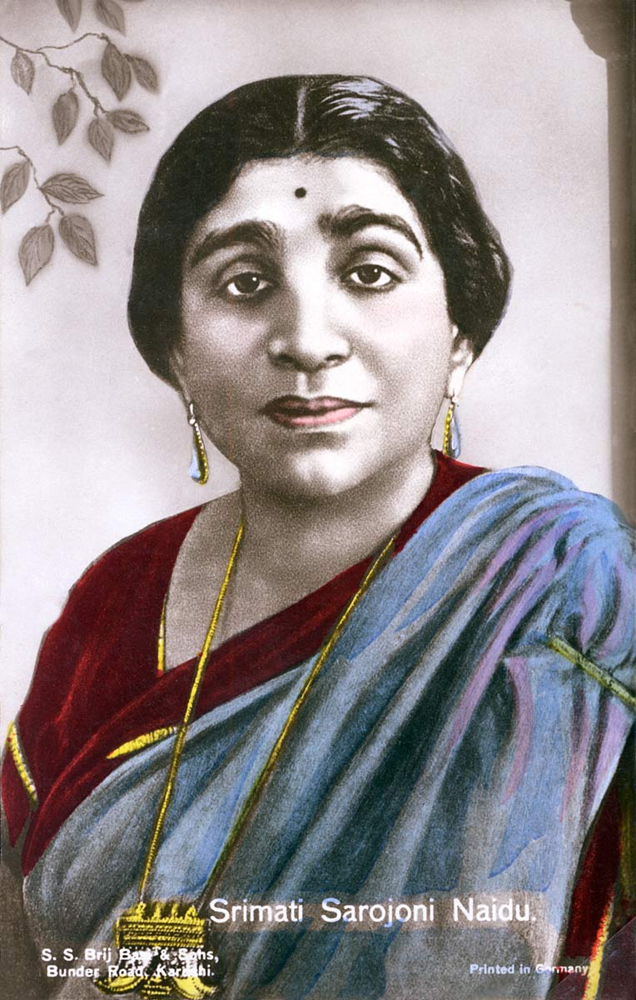
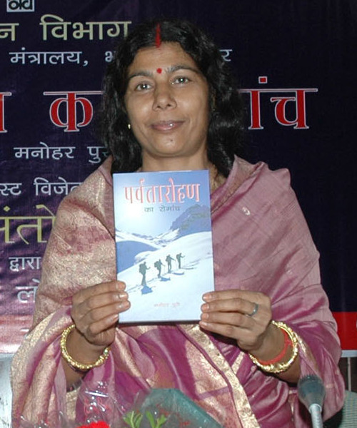

1. Who was the first female to become the governor of an Indian state?
Ans = Uttar Pradesh is the first state which elected a woman as the Governor. Sarojini Naidu, popularly known as the “Nightingale of India”, was the first Indian woman to become the governor of Uttar Pradesh which was then known as the United Provinces.
2. Who is the first Woman to climb Mount Everest twice?
Santosh Yadav (born 10 October 1967) is an Indian mountaineer. She is the first woman in the world to climb Mount Everest twice[1] and the first woman to successfully climb Mount Everest from Kangshung Face. She climbed the peak first in May 1992 and then again in May 1993 with an Indo-Nepalese Team.
3. Who is President of India

Droupadi Murmu is the 15th and current president, having taken office in the forenoon of 25 July 2022. The office of president was created when India officially became a republic on 26 January 1950 after gaining independence on 15th August 1947, when its constitution came into force.